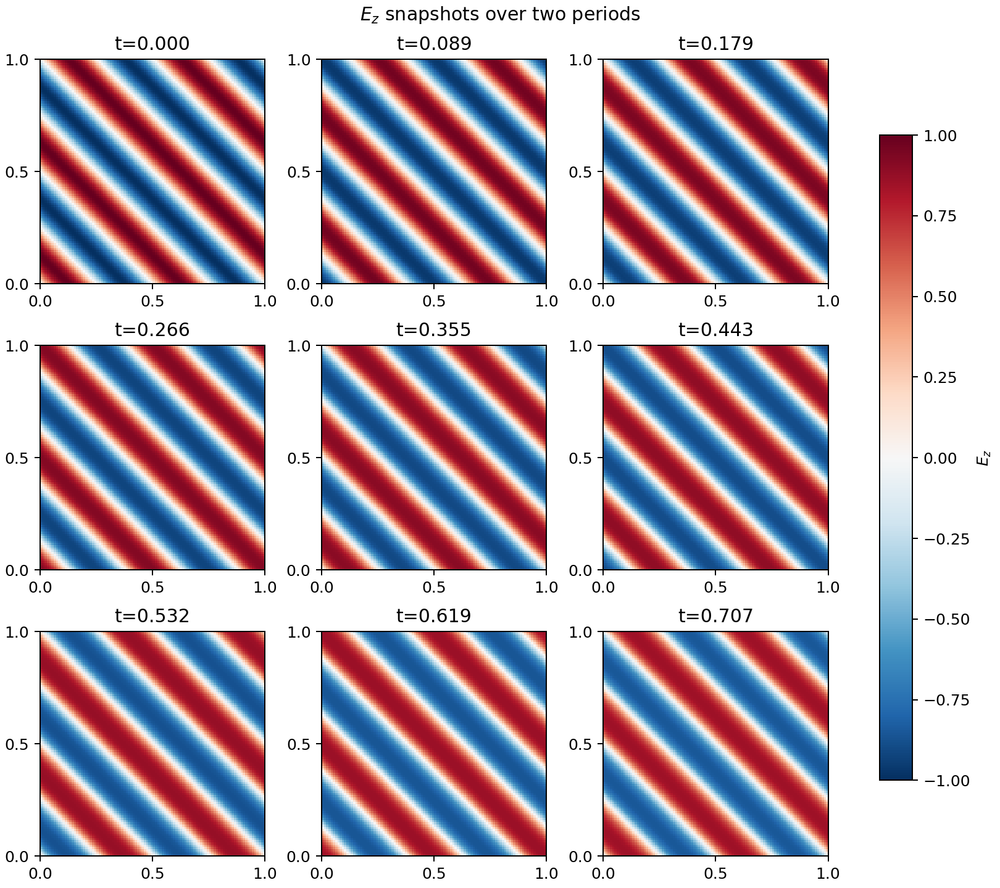
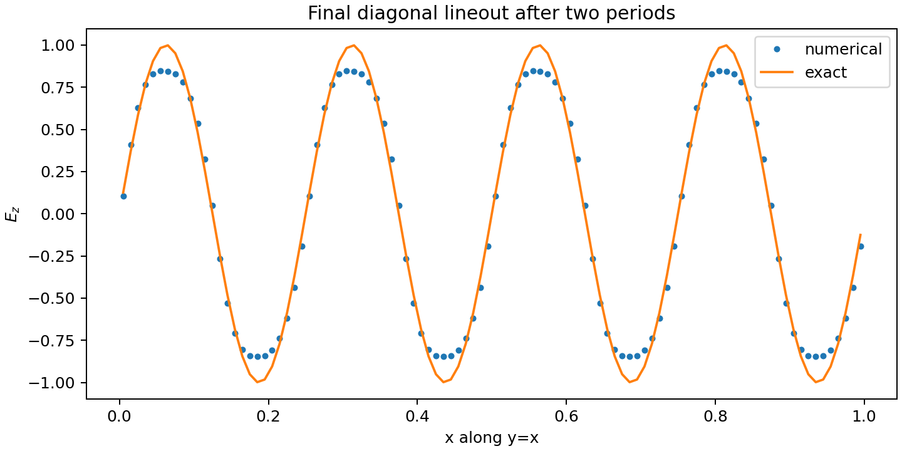
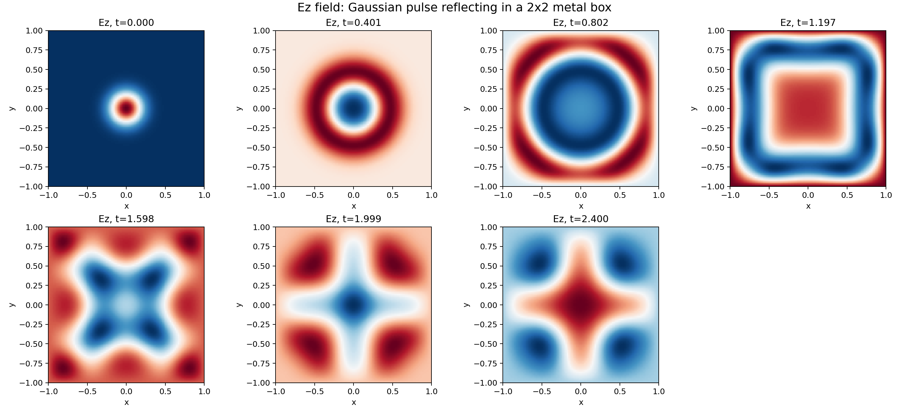

Research note · Numerical methods
The Maxwell Equations of Electromagnetism
In this numerics deep dive we look closely at the structure and properties of the Maxwell equations of electromagnetism, and show some examples of Lanyon-generated proofs and simulations.
Corresponding GitHub Repository
The Maxwell equations are a fundamental set of equations that describe the behavior of the electromagnetic field. In this numerics deep dive we look closely at the structure and properties of these equations and show some examples of Lanyon-generated proofs and simulations.
The Theory
The Maxwell equations of electromagnetism are a fundamental set of equations that describe the propagation of the electromagnetic field in vacuum, and, with appropriate modifications, in material media. These equations were discovered in the 19th century and are one of the most significant and fundamental equation systems in physics. They describe the vast set of phenomena that involve the electromagnetic field, from radio waves to extremely energetic phenomena in high-energy astrophysics. Maxwell’s equations consist of the curl equations
$$ \begin{align} \frac{\partial \mathbf{B}}{\partial t} + \nabla\times\mathbf{E} &= 0 \\ \epsilon_0\mu_0\frac{\partial \mathbf{E}}{\partial t} - \nabla\times\mathbf{B} &= -\mu_0\mathbf{J} \end{align} $$along with the divergence relations
$$ \begin{align} \nabla\cdot\mathbf{E} &= \frac{\varrho_c}{\epsilon_0} \\ \nabla\cdot\mathbf{B} &= 0. \end{align} $$Here, \( \mathbf{E} \) is the electric field, \( \mathbf{B} \) is the magnetic field, \( \epsilon_0 \), \( \mu_0 \) are the permittivity and permeability of free space, and \( \mathbf{J} \) and \( \varrho_c \) are specified currents and charges respectively. The speed of light is determined from \( c=1/(\mu_0\epsilon_0)^{1/2} \).
Though these equations were written in their final form by Maxwell, they were not written using vector notation above: this specific form was first written by Oliver Heaviside using Gibb’s vector calculus, itself the result of the work on various algebras in the 19th century, including on quaternions (Hamilton), exterior algebra (Grassmann), and geometric algebra (Clifford).
The Maxwell equations are a linear system of hyperbolic partial differential equations, that is, the propagation speed of electromagnetic waves in vacuum is finite and constant (the speed of light), and the flux Jacobian is diagnolizable with real eigenvalues. As Lanyon deals with hyperbolic PDEs extensively, and they also form part of more complex systems like the compressible Navier-Stokes equations, we formally define such systems here:
Definition [Hyperbolic Partial Differential Equations]: Consider a general system of equations of the form
$$ \frac{\partial \mathbf{Q}}{\partial t} + \frac{\partial \mathbf{F}}{\partial x} = 0 $$where \( \mathbf{Q} \) is the vector of the conserved quantities and \( \mathbf{F} = \mathbf{F}(\mathbf{Q}) \) is the flux function in the \( x \)-direction. This system is called hyperbolic if the flux Jacobian, \( \partial \mathbf{F} /\partial \mathbf{Q} \), has real eigenvalues and a complete set of right eigenvectors.
This definition seems very technical. Informally, a hyperbolic PDE is one in which disturbances in a uniform background propagate at finite speed without any damping. As nature seems to have an upper bound on how fast causal effects can propagate (the speed of light) all fundamental equations of physics are likely hyperbolic1.
Hyperbolic PDEs are a very important and broad class of equations and Lanyon has extensive support for implementing and verifying solvers for such systems, including highly nonlinear ones like the compressible Euler equations, the magnetohydrodynamics equations, and others. Many interesting phenomena can occur in nonlinear hyperbolic PDEs, such as shocks, contact discontinuities, and rarefaction waves. However, as the Maxwell equations are linear the only structures that can appear are discontinuities.
For the Maxwell equations the eigenvalues are \( \{-c,-c,c,c,0,0\} \).
Properties of the Maxwell equations
The electromagnetic field can carry both energy and momentum. We can derive balance laws for the energy and momentum of the electromagnetic field. Using vector calculus identities allows to derive the energy evolution equation
$$ \frac{\partial }{\partial t} \left( \frac{\mathbf{B}^2}{2\mu_0} + \frac{\epsilon_0\mathbf{E}^2}{2} \right) + \frac{1}{\mu_0}\nabla\cdot\left( \mathbf{E}\times\mathbf{B} \right) = -\mathbf{E}\cdot\mathbf{J}. $$This equation says that the electromagnetic energy (the term in the time derivative) changes due to the flux of the energy, \( \mathbf{E}\times\mathbf{B} \), and due to the energy exchange between the electric field and the current. Note that the magnetic field does no work and hence does not appear on the right-hand side of this equation. This is a balance law as the field can gain or lose energy due to the exchange term with the current. When we include an evolution equation for the current (say derived from the Vlasov equation) we can derive a total energy conservation law that will also include particle energy.
Some more vector calculus identities allow us to derive a balance law for the electromagnetic momentum:
$$ \frac{\partial }{\partial t} \left( \mathbf{E}\times\mathbf{B} \right) + \nabla\cdot \mathbf{T} = -\varrho_c \mathbf{E} - \mathbf{J} \times \mathbf{B} $$Here, \( \mathbf{T} \) is the rather cumbersome-looking stress-energy tensor given by
$$ \mathbf{T} = \left( \frac{\mathbf{B}^2}{2\mu_0} + \frac{\epsilon_0\mathbf{E}^2}{2} \right) \mathbf{g} - \left( \epsilon_0 \mathbf{E}\otimes \mathbf{E} + \frac{1}{\mu_0} \mathbf{B}\otimes \mathbf{B} \right) $$or in abstract index notation
$$ T_{ab} = \left( \frac{\mathbf{B}^2}{2\mu_0} + \frac{\epsilon_0\mathbf{E}^2}{2} \right) g_{ab} - \left( \epsilon_0 E_a E_b + \frac{1}{\mu_0} B_a B_b \right). $$Here \( \mathbf{g} \) is the metric tensor. Note again that the electromagnetic momentum equation is a balance law, that is, it describes the evolution of the electromagnetic momentum due to fluxes and exchange of momentum with charges and currents. To derive a full conservation law we would have to include the evolution equation for charges and current, for example, from the Vlasov equation.
A somewhat subtle issue in the Maxwell equations is the fact that the divergence conditions appear to be merely constraint equations, that is, the pair of curl equations appear more fundamental than the pair of divergence equations. It is easy to show from the equations listed above that if, at \( t =0 \), \( \nabla \cdot \mathbf{B} = 0 \) and \( \nabla \cdot \mathbf{E} = \varrho_c/\epsilon_0 \), then these conditions will remain so at all future times. This property relies on the fact that the divergence of a curl of a vector field vanishes (the div-curl property), and that time and space derivatives commute. Though this is certainly true for smooth solutions in the continuous limit, it need not be true when Maxwell equations are actually discretized on a grid. This issue frustrates the process of developing general-purpose schemes for the Maxwell equations: one needs to ensure that the discrete curl and divergence operators satisfy the div-curl property. We elaborate on this issue in the section on numerics.
The Numerics
For the purposes of this numerics deep dive we will use a finite volume (FV) scheme to solve the Maxwell equations. Later we shall explore discontinuous Galerkin (DG) schemes, Spectral Differences (SD) schemes, and the finite-difference-time-domain (FDTD) scheme. Each of these schemes have unique properties that are useful in problems involving multi-physics simulations. For example, the FV, DG, and SD schemes are particularly powerful when combining fields with nonlinear fluid or kinetic equations (e.g. in plasma physics and self-gravitating systems). The FDTD scheme is an excellent choice when the problem remains linear (which covers a vast portion of electromagnetism), or when combined with particles to produce particle-in-cell (PIC) codes.
Exact Solutions to 1D Linear Hyperbolic Systems
Before we construct FV schemes it is important to understand how one can find exact solutions to 1D linear hyperbolic systems on infinite domains. The key ideas in this section are critical for understanding the proofs of correctness that Lanyon generates. Consider again a hyperbolic system containing \( m \) state variables written as
$$ \frac{\partial \mathbf{Q}}{\partial t} + \frac{\partial \mathbf{F}}{\partial x} = 0 $$As the system is linear we can write \( \mathbf{F} = \mathbf{A}\mathbf{Q} \), where \( \mathbf{A} \) is a \( m\times m \) matrix. As the system is hyperbolic, it will have real eigenvalues and a complete set of eigenvectors. Let \( \lambda_p \) be the eigenvalues and \( \mathbf{r}^p \) and \( \mathbf{l}^p \), \( p=1,\ldots,m \), be the right and left eigenvectors respectively. We will represent right eigenvectors as column vectors, and left eigenvectors as row vectors.
To solve the 1D equation we first convert it to a system of uncoupled advection equations by multiplying the 1D equation on the left by \( \mathbf{l}^p \). This gives
$$ \frac{\partial w^p}{\partial t} + \lambda_p \frac{\partial w^p}{\partial x} = 0 $$Note that we can do this as hyperbolicity ensures that the eigenvectors are complete, that is, they provide a basis for the \( \mathbf{A} \) matrix. Here, we have defined the Riemann variables \( w^p = \mathbf{l}^p \mathbf{Q} \). The completeness of the eigenvectors allows us to reconstruct \( \mathbf{Q} \) knowing the Riemann variables:
$$ \mathbf{Q} = \sum_p w^p \mathbf{r}^p. $$Notice that these are uncoupled advection equations for the Riemann variables \( w^p \) and hence much easier to solve.
A useful identity is
$$ \sum_p w^p \lambda_p \mathbf{r}^p = \sum_p w^p \mathbf{A} \mathbf{r}^p = \mathbf{A} \sum_p w^p \mathbf{r}^p = \mathbf{A}\mathbf{Q} = \mathbf{F}(\mathbf{Q}). $$Now consider a domain \( -\infty < x < \infty \), and the initial conditions \( w^p_0(x) = \mathbf{l}^p \mathbf{Q}_0(x) \). Each advection equation for the Riemann variables can be solved exactly as
$$ w^p(x,t) = w^p_0(x-\lambda_p t). $$This expression merely states that the Riemann variable \( w^p \) advects without any change in shape, with speed \( \lambda^p \). Note that each variable may travel with different speeds, even in different directions. From this solution, we can recombine to compute the exact solution to the linear system as
$$ \mathbf{Q}(x,t) = \sum_p w^p_0(x-\lambda_p t) \mathbf{r}^p = \sum_p \mathbf{l}^p \mathbf{Q}_0(x-\lambda_p t) \mathbf{r}^p. $$This simple derivation for linear 1D systems is key to constructing schemes, even for nonlinear systems of equations in multiple dimensions. In fact, in general, many rigorous theorems for hyperbolic PDEs are only easily provable in 1D and only for linear (or simple nonlinear) systems.
Basic Formulation of Finite-Volume Schemes
The finite volume (FV) scheme for the system is a method to update the cell average of the solution in time. Higher-order schemes like DG and SD build on top of the key ideas presented below by also updating high-order moments (mean slope, quadratic terms, etc.) to obtain greater accuracy. However, ideas from the simplest FV schemes underlie all of the key schemes. Consider a cell \( I_j \equiv [x_{j-1/2},x_{j+1/2}] \) with uniform cell-spacing \( \Delta x \equiv x_{j+1/2}-x_{j-1/2} \). Integrate over the cell to get
$$ \frac{\partial \mathbf{Q}_j}{\partial t} + \frac{\mathbf{F}_{j+1/2}-\mathbf{F}_{j-1/2}}{\Delta x} = 0 $$where \( \mathbf{Q}_j \) are cell average quantities
$$ \mathbf{Q}_j(t) = \frac{1}{\Delta x}\int_{I_j} \mathbf{Q}(x,t) $$and \( \mathbf{F}_{j\pm 1/2} = \mathbf{F}(\mathbf{Q}_{j\pm 1/2}) \) are the fluxes at the cell-edges \( x_{j\pm 1/2} \). Notice that in effect a finite volume scheme uses the mean flux gradient in the cell
$$ \frac{1}{\Delta x}\int_{I_j} \frac{\partial \mathbf{F}}{\partial x} \thinspace dx = \frac{\mathbf{F}_{j+1/2}-\mathbf{F}_{j-1/2}}{\Delta x}. $$to update the cell average in time. This is a subtle point and often the cause of misinterpreting the accuracy or order of a FV scheme.
At this point the discrete expression is exact, but only formally: given the cell averages we can’t uniquely determine the edge values \( \mathbf{Q}_{j\pm 1/2} \) to insert into the edge fluxes. The FV scheme is an approximation in which these edge values are recovered (approximately) from the cell averages and then used in a numerical flux to update the cell average approximation. We can write this as
$$ \frac{\partial \mathbf{Q}_j}{\partial t} + \frac{\mathbf{G}(\mathbf{Q}_{j+1/2}^+,\mathbf{Q}_{j+1/2}^-) - \mathbf{G}(\mathbf{Q}_{j-1/2}^+,\mathbf{Q}_{j-1/2}^-)}{\Delta x} = 0 $$where \( \mathbf{G}(\mathbf{Q}_L,\mathbf{Q}_R) \) is the numerical flux function and \( \mathbf{Q}_{j\pm1/2}^+ \) and \( \mathbf{Q}_{j\pm 1/2}^- \) are recovered values just to the right and left of the interface \( j\pm 1/2 \) respectively. For consistency with the exact form of the equation we must ensure that the numeric flux is Lipschitz continuous2, and consistent: when \( \mathbf{Q}_L = \mathbf{Q}_R \) then \( \mathbf{G}(\mathbf{Q}_L,\mathbf{Q}_R) \) must reduce to the physical flux function, i.e.
$$ \lim_{\mathbf{Q}_{L,R}\rightarrow \mathbf{Q}} \mathbf{G}(\mathbf{Q}_L,\mathbf{Q}_R) = \mathbf{F}(\mathbf{Q}). $$Lanyon ensures that the numerical flux function it chooses indeed satisfies these two properties.
Hence, to completely specify a finite volume scheme we must design algorithms for each of the following three steps:
-
Step 1: A reconstruction scheme (possibly with limiters) to compute the left/right interface values \( \mathbf{Q}_{L,R} \) at each interface using a set of cell average values around that interface,
-
Step 2: A numerical flux function that takes the left/right values and returns a consistent approximation to the physical flux, and
-
Step 3: A time-stepping scheme to advance the solution in time and compute the cell averages at the next time-step.
For each step multiple choices are possible, each with different numerical behavior, leading to schemes with different tradeoffs between accuracy and robustness.
First-order upwind schemes
The backbone of any high-order method for hyperbolic PDEs is a first-order upwind method in which we use the cell averages directly as the left/right edge values, skipping the recovery step completely.
Instead of directly discretizing the coupled system of equations (in which the upwind direction may not not be clear), we can instead solve the linear advection equations for the Riemann variables using an upwind method and the convert the solution for \( w^p \) to \( \mathbf{Q} \). We can write a first-order upwind method for the Riemann variables, as that uses simple forward-differences in time, as
$$ w^{p,n+1}_j = w^{p,n}_j - \frac{\Delta t}{\Delta x} \left( G^p(w^{p,n}_{j+1},w^{p,n}_{j}) - G^p(w^{p,n}_{j},w^{p,n}_{j-1}) \right) $$where the numerical flux function for the Riemann variables, \( G^p(w_R,w_L) \), is defined as
$$ G^p(w_R^p,w_L^p) = \frac{\lambda_p}{2}(w_R^p + w_L^p) - \frac{|\lambda_p|}{2}(w_R^p - w_L^p). $$Note that this choice of flux ensures that if \( \lambda_p>0 \) then \( G^p(w_R,w_L) = \lambda_p w_L \) and if \( \lambda_p < 0 \) then \( G^p(w_R,w_L) = \lambda_p w_R \), ensuring proper upwinding of the values at cell interfaces.
To convert this to a scheme for \( \mathbf{Q} \) instead, multiply by \( \mathbf{r}^p \) and sum over \( p \) to get
$$ \mathbf{Q}^{n+1}_j = \mathbf{Q}^n_j - \frac{\Delta t}{\Delta x}\left(\mathbf{G}(\mathbf{Q}^n_{j+1},\mathbf{Q}^n_{j}) - \mathbf{G}(\mathbf{Q}^n_{j},\mathbf{Q}^n_{j-1})\right). $$The numerical flux \( \mathbf{G}(\mathbf{Q}_R,\mathbf{Q}_L) \) is computed from
$$ \begin{align} \mathbf{G}(\mathbf{Q}_R,\mathbf{Q}_L) &= \sum_p \mathbf{r}^p G^p(w_R^p,w_L^p) \\ &= \frac{1}{2} \sum_p \lambda_p \mathbf{r}^p (w_R^p+w_L^p) - \frac{1}{2} \sum_p |\lambda_p| \mathbf{r}^p (w_R^p-w_L^p). \end{align} $$If we introduce the notation
$$ \begin{align} \lambda_p^+ &= \max(\lambda_p,0) \\ \lambda_p^- &= \min(\lambda_p,0) \end{align} $$and use the identity we derived before, we will get a cleaner expression for the numerical flux
$$ \mathbf{G}(\mathbf{Q}_R,\mathbf{Q}_L) = \frac{1}{2}\big(\mathbf{F}(\mathbf{Q}_R)+\mathbf{F}(\mathbf{Q}_L)\big) - \frac{1}{2}(A^+\Delta \mathbf{Q}_{R,L} - A^-\Delta \mathbf{Q}_{R,L}) $$where the fluctuations \( A^\pm\Delta \mathbf{Q} \) are defined as
$$ A^\pm\Delta \mathbf{Q}_{R,L} \equiv \sum_p \mathbf{r}^p \lambda^\pm_p (w_R^p-w_L^p) = \sum_p \mathbf{r}^p \lambda^\pm_p l^p(Q_R-Q_L). $$The fluctuations satisfy the flux–jump identity
$$ A^+\Delta \mathbf{Q}_{R,L} + A^-\Delta \mathbf{Q}_{R,L} = \sum_p \mathbf{r}^p \underbrace{(\lambda_p^+ + \lambda_p^-)}_{\lambda^p} (w^p_R-w^p_L) = \mathbf{F}(\mathbf{Q}_R)-\mathbf{F}(\mathbf{Q}_L). $$This is a critical identity to ensure that the numerical scheme converges to the correct physical solution when the grid is refined. The Lanyon symbolic theorem-prover checks such properties via a proof assistant language (such as Lean), giving confidence that the scheme it selects is actually solving the equation one wants to solve.
Using this final identity, the complete first-order update for the linear system can be written entirely in terms of fluctuations as
$$ \mathbf{Q}^{n+1}_j = \mathbf{Q}^n_j - \frac{\Delta t}{\Delta x}\left(A^-\Delta \mathbf{Q}_{j+1/2} + A^+\Delta \mathbf{Q}_{j-1/2}\right). $$Note that, by instead dividing by \( \Delta t \) and taking limits as \( \Delta t \rightarrow 0 \), this can be written in the semi-discrete or method-of-lines form
$$ \frac{\partial \mathbf{Q}_j}{\partial t} = - \frac{1}{\Delta x}\left(A^-\Delta \mathbf{Q}_{j+1/2} + A^+\Delta \mathbf{Q}_{j-1/2}\right). $$This system of ODEs can be solved using, for example, a Runge-Kutta time-stepper. Further if the left/right edge values \( Q_{L,R} \) used in the fluctuations are reconstructed (and not merely the cell-average values) then we will get a spatially high-order scheme.
In additions to the fluctuations, we can introduce waves as follows. We define
$$ \mathbf{W}^p = \mathbf{r}^p \mathbf{l}^p(\mathbf{Q}_R-\mathbf{Q}_L). $$In terms of the waves the fluctuations can be written as
$$ \begin{align} A^+ \Delta \mathbf{Q} &= \sum_{\lambda_p > 0} \lambda_p \mathbf{W}^p \\ A^- \Delta \mathbf{Q} &= \sum_{\lambda_p < 0} \lambda_p \mathbf{W}^p. \end{align} $$Depending on the scheme, either the waves or fluctuations (or both) may need to be computed. For several schemes the fluctuations are required, but for others (for example, single-step method based on the Lax-Wendroff scheme) the waves are needed. Lanyon ensures that the necessary relationships between waves and fluctuations, whenever both are computed, are always satisfied.
A Note on Divergence Relations and the Perfectly-Hyperbolic Maxwell Equations
As described above, the divergence relations in the Maxwell equations are subtle to incorporate into a numerical method. The most important (and venerable) scheme that automatically satisfies the required discrete div-curl property is the finite-difference-time-domain (FDTD) method. This method, invented many decades ago, is the standard for many time-dependent Maxwell solvers. However, the FDTD is not always suitable in multi-physics simulations, for example, in astrophysical plasmas and fusion, where the fields are coupled to charged particles or fluids. In this case, when the flows become turbulent or shocks form, the FDTD schemes display horrible dispersion errors that manifest themselves as spurious short-wavelength, high-amplitude noise in the electromagnetic field that can eventually completely contaminate the solution. Fixing these dispersion errors is possible, but it results in the discrete div-curl relation being violated.
This feature of the discrete world, that is, ensuring that one property being satisfied results in another property being violated, is common across all of computational physics and engineering. This gives rise to the No Free Lunch Principle:
No Free Lunch Principle: Any scheme that attempts to ensure a property of the continuous system is satisfied, invariably results in violations of other properties, or a degradation in solution quality.
An consequence of the No Free Lunch Principle is that there is no universally good numerical method: one must choose the best method based on the properties that are important to preserve for the problem at hand. For example, the FDTD method is excellent for studying vast problems in electromagnetism, but not for multi-fluid simulations of plasmas. Similarly, a shock-capturing method is essential for supersonic and other high-energy phenomena, but these often over-damp turbulent structures. Selecting a proper scheme is a complex process and requires deep knowledge of the behavior of these schemes in production problems. It is not enough to merely run a few simple test problems. Lanyon encodes this knowledge based on decades of our experience gained in studying the properties of various methods and in using them for difficult production problems.
As we are exploring the finite volume method here, how can we ensure that the divergence conditions are satisfied, at least approximately? One approach is to extend the Maxwell equations by introducing two additional scalar fields that represent the errors in the divergence conditions. Many such extensions are possible. A somewhat natural extension is called the Perfectly-Hyperbolic Maxwell Equations (PHM).
$$ \begin{align} \frac{\partial \mathbf{B}}{\partial t} + \nabla\times\mathbf{E} + \gamma \nabla\psi &= 0 \\ \epsilon_0\mu_0\frac{\partial \mathbf{E}}{\partial t} - \nabla\times\mathbf{B} + \chi \nabla \phi &= -\mu_0\mathbf{J} \\ \frac{1}{\chi}\frac{\partial \phi}{\partial t} + \nabla\cdot\mathbf{E} &= \frac{\varrho_c}{\epsilon_0} \\ \frac{\epsilon_0\mu_0}{\gamma}\frac{\partial \psi}{\partial t} + \nabla\cdot\mathbf{B} &= 0. \end{align} $$Here \( \psi \) and \( \phi \) are new scalar fields and \( \gamma \) and \( \chi \) are new propagation speeds. The eigenvalues of the PHM system are \( \{-c\gamma, c\gamma, -c\chi, c\chi, -c, -c, c, c\} \). Note that the zero eigenvalue is now gone. The PHM system ensures that any errors in the divergence conditions are propagated out of the domain at the speeds \( c\gamma \) and \( c\chi \). Reasonable choices for vacuum problems are \( \gamma = \chi = 1 \), which ensures that the errors propagate at the speed of light3.
The Proofs
The Maxwell equations are more complicated than the advection-diffusion equations in the sense that they are system of equations rather than a scalar equation4. Lanyon-generated proofs for the full Maxwell equations, including their PHM variant, are presented on our Lanyon GitHub repo. Lanyon generated these proofs in about 130 seconds, creating over 15,000 lines of Lean code and 8,500 lines of C kernels. Some key highlights of the proofs:
-
Definitions of the fluxes, for example, the flux in the $x$-direction, definitions of the wave-speeds, and other key definitions that appear in the various theorems.
-
Theorems of hyperbolicity in the $x$-direction, with similar proofs for the other directions; wave-jump consistency in the $x$-direction, etc.
For a complete set of proofs see the GitHub repo linked above. Also see the Lanyon Formulary for various definitions and an overview of the identities used in the proofs.
The Results
We now look at a selection of two 2D electromagnetic simulation results. For a full description of the steps needed to run Lanyon see the Research Note on the Advection-Diffusion Equation, where we describe the Lanyon commands and the sequence in which they must be run.
Plane Wave Propagating Diagonally
For this problem we will look at a plane wave that propagates diagonally across a 2D periodic domain. This is a fundamental test of whether the solver can correctly simulate electromagnetic waves in vacuum. We first create a 2D solver for the Maxwell equations using the following prompt:
/specify Create a solver for 2D Maxwell equations. Keep all components of the electric and magnetic field
Note the structure of the prompt: we instruct Lanyon to keep all
components of the EM field, even though we are in 2D. With other
prompts Lanyon will only keep components for transverse-electric or
transverse-magnetic modes. This prompt will create the DSL
specification for the 2D Maxwell solver (see the GitHub
repo
for the generated DSL). The /verify command will produce the Lean
proof of correctness (see the description above) and the /compile will produce the C
kernels. See, the C code for the Lanyon generated-kernels.
Once the proofs and kernels are generated we can run the simulation. For this simulation we used the prompt:
/simulate Simulate the propagation of a plane-wave. Use 2 modes in X, 2 modes in Y on a periodic domain. Use 100x100 mesh
This prompt will create the simulation driver and run it, producing a standard set of diagnostic plots and simulation summaries.

The following figure shows the 1D lineout along the diagonal

The above figure shows that the maxima/minima of the wave are flattened due to the choice of the min-mod limiter. A better extrema-preserving limiter can also be used that fixes this issue, and will be explored at a later date.
Electromagnetic Pulse in a Metal Box
The second simulation we will do is that of an EM pulse in a metal box. This pulse is initially in the shape of a Gaussian centered in the middle of the box. For this simulation we build a solver for the PHM equations:
/specify Create a solver for 2D Perfectly Hyperbolic Maxwell equations. Keep all components of the electric and magnetic field
The prompt for running the simulation is
/simulate Simulate a pulse in a metal box. Set the initial Ez field to exp(-25 r^2) where r = sqrt(x^2 + y^2). Use a 2x2 grid with the pulse centered in the middle. Use 100x100 grid.
Lanyon will create a simulation driver5 and run the simulation, producing various plots and diagnostics. The pulse propagates outwards and reflects off the walls, creating complex interference patterns seen in the figure below.

Conclusion
We have shown how Lanyon generates Lean proofs, C code, and simulation drivers for multidimensional Maxwell equations, allowing one to solve these equations using a finite volume method. Such methods are particularly suited to multi-physics problems in which the field is coupled to a plasma, modeled as either as fluid or a kinetic species. The finite volume method does have some disadvantages: the FV scheme decays the $L_2$-norm of the solution, which, unfortunately, happens to be the EM energy. The Finite-Difference-Time-Domain (FDTD) method conserves the energy but has the disadvantage that short wavelength (as compared to the grid size) waves suffer from dispersion errors and these can be severe when shocks form. Though one may think that shocks will not form in the Maxwell equations (as they are linear), the coupling to plasmas will make the field propagation effectively nonlinear and the fields will shock when the fluid does. Hence, being able to capture shocks correclty even in the Maxwell equations in important, especially for multi-physics simulations. Higher-order methods, like discontinuous Galerkin methods and spectral differences, can help reduce the numerical loss of energy, and we shall explore such schemes using Lanyon later.
References and Footnotes
-
Though all fundamental equations of physics are likely to be hyperbolic, the process of coarse-graining leads to dissipative (parabolic) terms, resulting in irreversibility. This irreversibility appears in many guises, such as diffusive terms as well as collision operators in kinetic systems. All such additional terms lead to energy dissipation at the smallest scales, leading to thermalization. The appearance of such terms is intimately related to the second law of thermodynamics and the concept of entropy. ↩︎
-
This is a somewhat technical restriction which ensures that the derivative of the numerical flux with respect to each of its independent variables is bounded. ↩︎
-
It turns out that for problems in which we have finite charge density the PHM system is not consistent for correcting the divergence errors in the electric field. In such cases we need to set \( \chi = 0 \). ↩︎
-
However, we note that, as the Maxwell equations do not have diffusive terms, the Lanyon proof-generator actually is faster for the Maxwell equations than for the advection-diffusion equation. ↩︎
-
Notice an ambiguity introduced in the simulate prompt: the grid is defined to be $2\times 2$, followed by “Use 100x100 grid”. This shows that Lanyon has in-built linguistic robustness that allows it to disentangle some ambiguity in the prompt: Lanyon realizes that the domain size needs to be of length 2 on each side and the number of cells needs to be $100\times 100$. In general, however, it is still best to make the prompt as accurate as possible. ↩︎